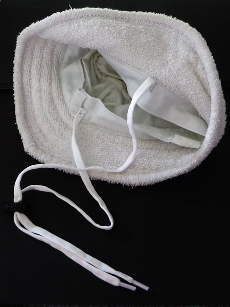
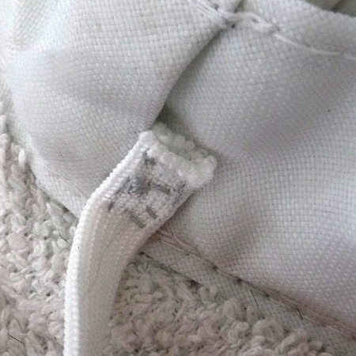
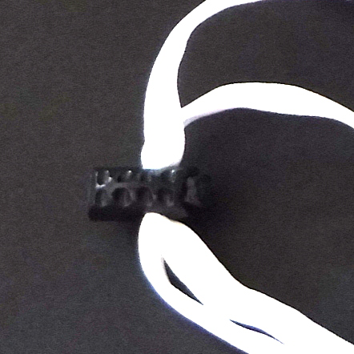
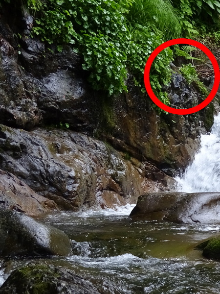
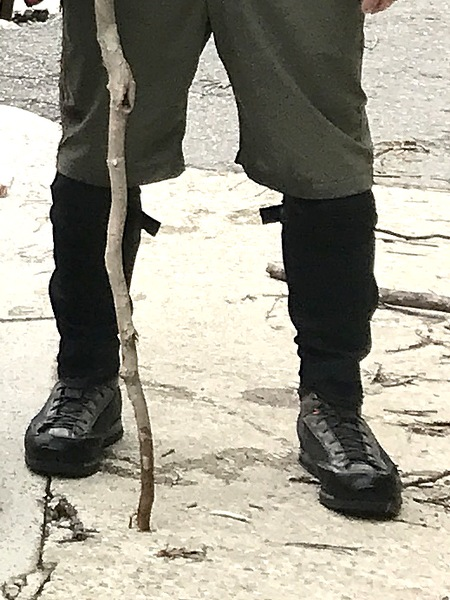
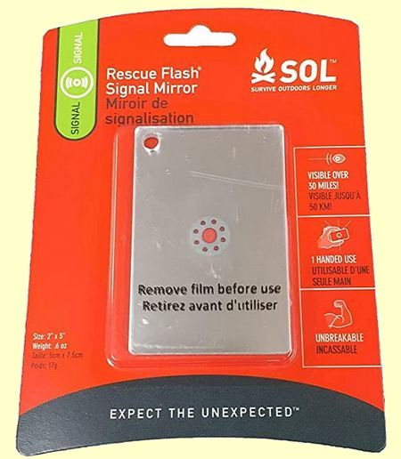
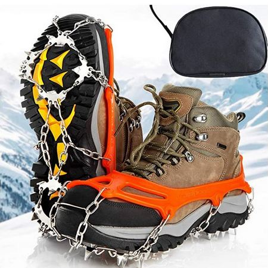
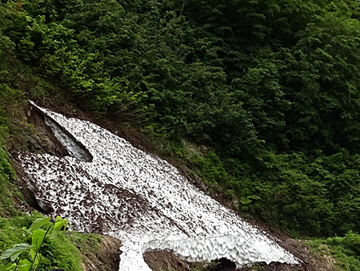
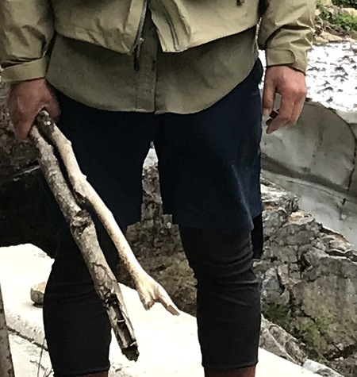
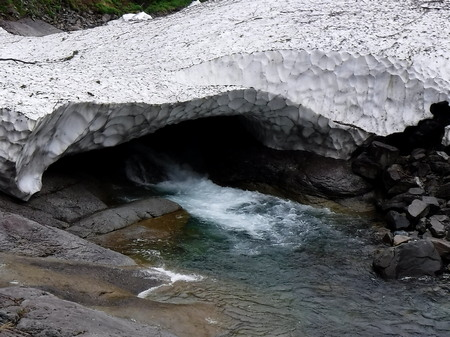

ティップス
釣りの前夜に 最悪の事態に備える
目 次
想像力を働かせ、想定外という事態を未然に防ぐ
我が国では、災害、事故、不祥事が起こるたびに政治家、企業のトップ、責任ある者たちの口から「想定外の事態だった」という言葉が発せられ、それでコトが済んでしまう。
これは、彼らだけではなく、国民すべてに危機管理・安全確保についての思考停止状態が、長年続いているからだと思われる。危険や、最悪の事態が想像できない、あるいは想像したくない、という心理なのかとも思う。
人間は、ミスをする動物であり、釣りは大自然の中での活動なので、予想もつかないことが充分起こりうるが、そこを想定して備えておくことがとても重要だと思う。
この記事では、私の苦い経験、悲しい思い出から、渓流釣りにおける最悪の事態を防ぎ、少しでも被害が少なくなるように、軽微な被害から、命に関わる重大な事態まで、順を追って書いてみる。
1．装備に関わること
- ロッド
・藪こぎの最中にティップを折る [経験有り！]
対処法
A : 竿袋を常に携行し、長い距離の藪こぎでは、面倒くさがらず収納する
B : 短距離の藪漕ぎでは、ロッドのグリップを前方に向け、ティップを後ろにして移動する。これにより、前方の木枝などにティップを押しつけて折ることが無くなる。ただし、後方のティップには目が行き届かなくなるので、ラインが草や枝に絡まることは発生します。でも、大切なロッドを折ってしまうことを思えば、いったん立ち止まって絡まりをほどいてから歩き出す方が良いでしょう。
この記事をアップする直前になって、メールマガジンの送付を登録してある
TroutBitten
というウェブサイトの、Domenick Swentosky という方の記事が配信されました。Carry the Fly Rod In Front or Behind? An Eternal Debate Continues
「フライロッドは前向きに持って歩くのか、それとも後ろ向きか？ 終わることの無い議論は続く」
という記事で、まさに、我が意を得たり！ という内容でした。ご一読をお勧めします。・自動車がらみのアクシデント
・ドアに挟んで折る。同行者、子供さんたちにもご注意を！
・移動時や帰宅時に、ルーフに載せてあったロッドを落として破損させる。あるいは忘れて来る [経験有り！]
・移動時に、車内に入れたロッドを不用意に動かしてティップを折る
・根がかりを強引にあおったり、立木の枝に絡まったラインをほどこうとティップを振った時に折る [経験有り！]
・竿袋への出し入れの時、ティップを折る
・魚を釣り上げ、何気なく足下に置いたロッドを、魚の写真撮影に気を取られ、知らずに踏みつけて折る
・お店で試し振りをしていたロッドの継ぎ目が抜け、空中に飛んでから落下して折れそうになる [経験有り！]
・現場でタックルをセットしてから、ドラグを調整する時に、ロッドと平行に近い角度でラインを引っ張ってしまって折る[経験有り！]
対処法
A : 上に述べたような自動車がらみ、根掛かり・木枝掛かり、取り込み後のトラブルは、細心の注意、心配りでロッドを扱うことで防ぐしかない。交通事故と同じで、焦る心がトラブルを招く。
B : 経験から言うと、カーボン含有率が高く、感度の良い最近のロッドは、昔のロッドと比べると、繊細で折れやすいので注意！
C : 店舗でロッドの試し振りをしたいと思ったら、店員さんに声を掛けて、しっかり継いであるか確認してもらい、立ち会いのもとで行うこと。
大昔、名古屋のアウトドアショップに陳列されていたフライロッドを試し振りしたとき、ティップ側が外れて天井目がけて飛んで行き、一回転して床に落ちました。フェルール（継ぎ目）の方から落ちたので折れることはありませんでしたが、心臓に悪かったです - リール
・川原で転んでリールを石に打ちつけ、フレームが歪んだり、ベールアームが曲がる
・リールシートが緩んで落下し、石に打ちつけ、破損する
・スピニングリールのハンドルが緩み、どこかに落として紛失する [経験有り！ 幸運にもこの時は、帰り道に林道の残雪の上に落ちていたのを見つけた]
対処法
リールシートのリング、リールハンドルなどは、釣りの最中に折を見て締め直すこと
- 帽子
・強風や藪漕ぎの時、ストラップ付きのサングラスを外す時などに落とす。 [経験有り！ 2021/07 の釣行時に、ふと気が付くとレインハットが無かった。気を抜いて、あごひもをせずに歩いてきたら、どこかで落としたようだ。幸い、探しながら少し戻ると、上流の淵の反転流に浮いていて拾うことが出来た。]
対処法
A : あごひもはちゃんと締めること
B : あごひもの付いていない帽子では、百円ショップで売っている靴紐、コードストッパーで簡単に自作できる。

自作の帽子用あごひも
百円ショップの伸縮性靴紐を縫い付ける
お粗末な裁縫仕事で失礼.....
百円ショップのコードストッパー - サングラス
・落として川に流されたり、レンズが割れたり傷が付いたりする
・荷物の中で押しつぶされる
対処法
A : 必ず、落下防止用ストラップを付ける。高価なメーカー製品、ブランド品で無くても、またまた出てきた百円ショップで買える伸縮性靴紐と、ホームセンターで売っている電工用の熱収縮チューブで安価に自作できます。
偏光サングラスの落下防止用ストラップ：自作記事/B : 持ち運びの際は丈夫なケースに入れ、押しつぶされることを防ぐ
- カメラ
・川に落として流されたり、水没で故障する。石の上に落として故障、破損する。
対処法
ニュージーランド北島で出会った、あるフィッシングガイドさんは、お客さんが自分のミスで一眼レフを水没させた時に、えらい勢いでさんざん文句を言われたよ.....と嘆いていました。
A : できれば防水・耐衝撃タイプのカメラを選ぶ
B : 一眼レフを携行する場合は細心の注意を払うこと
C : どんなカメラにも、ストラップを付ける
- スマホ、携帯電話
・川に落として流されたり、水没で故障する。石の上に落として故障、破損する
・電波圏外、バッテリー消耗で機能しなくなる
対処法
A : 防水のスマホでも、手の届かない深い場所に流されたらオジャンなので、ストラップを付けておく
B : 目立つ色の防水ポーチに入れておくと安心
C : 電波の到達範囲は、各電話会社のウェブサイトで確認しておく
D : モバイルバッテリーを防水ポーチに入れて携帯する。バッテリーは高品質の物を選ぶこと。安価な製品は発熱事故の可能性がある。できれば、使用時以外には電源を切っておくと良い
- 水温計
・釣りに夢中になって、測定するために水に入れたまま、川原に忘れて来る [経験有り！]
対処法
A : 凧糸、百円ショップのストラップ・カールコードなどで、ベスト、チェストバッグなどに保持しておく

D : リールのドラグを調整する時には、ロッドを持つ手と、ラインを引っ張る手の間隔を大きく広げ、ロッドティップとラインとの角度が 90度くらいになるようにします。今だから書けますが、現場でロッドを折ったときはかなりショックを受けました。（泣）
釣果に関わること
- フック
・常に鈎先の鋭利さをチェックすること。親指の爪に刺してみて、滑らずに刺さって食い込めばOK。
対処法
A : 刺さらないようであれば、他のルアーと交換する。プラグ・ミノータイプのルアーでは、トレブルフックが複数付いているので、現場でシャープナーを使って研ぎ直すのは時間の無駄と思われる。研ぎ直し作業は自宅で済ませておく。
B : 大型のフライであれば現場で研ぎ直すのもあり。
- ライン
・知らぬ間に傷が付いていたり、ウィンドノットが出来ていて、ここぞと言う時に切れる。 [経験 数え切れないほど有り！]
対処法
A : こまめにフックの結び目をチェック
B : こまめにウィンドノットの有無をチェック
C : 一生ものの大物が掛かったときのために、１クラス太いライン・ティペットを使う。これは、魚のサイズにかかわらず、ファイトの時間を短くすることができ、むやみに魚を弱らせないことにもつながる。キャッチアンドリリースの際には重要なポイントである
- リール
・予備のライン、スペアスプールを携行する
・車に近い川ならば良いけれど、奥深い源流、渓流ではスペアのリール本体を持ってゆく
- 忘れ物
・日帰りでも長期の遠征でも、肝心なアイテムを忘れて釣り場で後悔する。ありがちなのはカメラ、ランディングネット、フライボックス、予備のライン、フロータント、ラインクリッパー、運転免許証、偏光サングラス、日焼け止め、虫除け、etc.....
対処法
A : 季節毎、釣法毎に持ち物チェックリストを作成して、それにもとづいて釣行準備をする
B : 釣りを終えて、帰り支度を済ませたら、車の周辺、屋根の上を確認する習慣を付ける。 [経験有り！ 道具をしまう時、ラインを切ったルアーを、車のバンパー・ルーフの上や、トランク・リヤハッチの開口部に置き忘れる。]
命に関わること
- 転倒・溺水
対処法
A : 膝より深く、流れの速い瀬では、対岸へ渉らないこと
B : ウェーダーのベルトをきちんと締める
C : ウェーディングスタッフを携行する
D : ナタを携行し、現場で渡渉用の杖を作る
E : 渓流釣りであれば、首掛け型のフローティングベストを着用する
参考資料
- 鉄砲水（突然の増水・洪水）
対処法
A : 集中豪雨の可能性が無いか、事前に天気予報を必ず見て出かける
B : 釣り場では降っていなくても、上流で降った雨による急な増水に注意。スマホが使える場所であれば、雨雲レーダーなどの情報を確認する。
C : 急な豪雨、木の葉が流れてくる、水が濁り始める、など、増水の兆しがあったなら、すみやかに林道・道路のある側の岸に渡り、高場に非難する。
増水の初期では、渓流魚がよく釣れ出すことがあり、夢中になってしまうので要注意！ [経験有り！]D : 雪崩、スノーブリッジの崩落、斜面の土砂崩落による一時的なダム湖形成と、それらの崩壊による洪水に気を付ける。急に川の水が少なくなった時には要注意！
- 落雷
対処法
A : 事前の天気予報で確認、現地ではスマホで確認すること
B : 雷雨に遭遇したときの対処法を知っておくこと
参考資料 雷から身を守るには
出典： 気象庁ウェブサイトC : 黒い雷雲が見えたら、すぐに安全な場所、車などへ非難する
[経験有り！]
2018年12月2日、ニュージーランドでの雷雨遭遇体験記 - マムシなどの毒蛇
対処法
A : どれが毒蛇なのか、見分けが付くようにしておく。対処法 E の資料を参照
B : マムシは、人の姿を見ても逃げようとしない。攻撃態勢を取る。ロッドや棒で突いたりせず、すぐに安全な場所に逃げること
C : 岩場を登っている時、見えない所に手を掛ける際には注意すること。マムシに触ると噛みつかれる

赤丸のあたりに手を掛ける時には注意！D : 夏場、ウェットウェーディングの際には、膝から下をネオプレンのゲートルなどで保護する

膝から下をネオプレンのゲートルなどで保護E : 毒蛇に噛まれたときの応急処置方法を知っておくこと
参考資料 PDF 「マムシ」
出典：独立行政法人 国立病院機構 岩国医療センター - ツキノワグマ、ヒグマ
対処法
A : クマ避けの鈴、笛、爆竹、熊よけスプレーなどを携行する
B : 現地の方に、最近の状況を教えてもらう。頻繁に出る場所、時期など
C : 下記の参考資料 (2) を一読しておく。
- ハチによる被害
対処法
A : アナフィラキシーショックのある方は注意！
B : ポイズンリムーバーを携行する
C : 下記の参考資料 (2) を一読しておく。
- 参考資料 (1) クマ、ヘビ、ハチに関する特徴や習性ならびに事故を回避するための対処法
以下に要点を引用する
我が国の有害動物による年間の死者数は40名前後であり、うち30名前後がハチ、10名前後がヘビ、若干名がクマによる被害である。ヘビによる被害のほとんどがハブとされていることから、当地において懸念されるのは圧倒的にハチと考えて良さそうである。これはあくまで死者数についての統計であり、ケガを含めて考えるとクマやヘビについても軽視するわけにはいかない。
- 漆などの有害植物によるカブレ
対処法
A : 長袖、長ズボン、手袋、フェイスシェードの着用
B : そもそも現地の、どんな植物でカブレるのか判別が付くように、下記の参考資料 (2) を一読しておく。
- 参考資料 (2) 自然の中にある有毒な動植物
・出典：林野庁 東北森林管理局
- 転倒・骨折
A : ナタ、大型ナイフ、紐、などを携行し、添え木を作ることが出来るようにしておく
- 低体温症
・渓流で転倒し、動けなくなって濡れたまま長時間経つと、低体温症になる危険性がある。
対処法
A : エマージェンシーブランケットを携行する。
B : 下記の参考資料をよく読んでおく。
登山の医学 PDF 80-82ページC : 下記の解説動画を見ておく。
２０分で学ぶファーストエイド基本編「低体温症」・出典：国立登山研修所
- 道に迷う、遭難
・渓流で高巻きをしたり、初めて行く奥地の釣り場へ行く途中、帰途などに道に迷い、遭難する危険性がある。
対処法
[経験有り！ 25年ほど昔、遡行してきた川筋を戻らずに、横着をして、峰を越えて反対側の林道へ出ようと藪漕ぎを強行した際に、危うく道を間違えそうになった。かすかにバイクの音が聞こえて来たので林道の方向が判ったが、幸運にもあのバイクが通りかからなかったら遭難していたと思う。]
A : スマホ用地図アプリ 「山と高原地図」
B : 紙の地図。防水ケース・大判のジップロックなどに入れて携行する。
C : 方位磁石を携行する
D : 緊急時用の笛を携行する
E : ヘリコプターに太陽光を反射させることで、自分の位置を知らせることの出来るシグナルミラーを携行する
参考製品：画像はアマゾンジャパンより引用

F : 下記の参考資料をよく読んでおく。
危急時対策 PDF 62-69ページ・出典：国立登山研修所
- 雪の斜面からの滑落、スノーブリッジ渡渉途中での崩壊、落水
A : 雪深い地域での早春の釣りには、簡易型アイゼンを携行する。また、現場で適当な枝を探して杖とする。
参考製品：画像はアマゾンジャパンより引用


雪の斜面からの滑落に注意
適当な枝を探して杖とするB : 水辺近くの雪庇、スノーブリッジには近寄らない

危険な雪庇、スノーブリッジ - 釣り保険への加入
A : 家族には行き先、釣り場、おおよその入渓・脱渓地点を伝えて出かける
B : 遭難時の捜索費用の補償
ティップス 目次へ
サイトマップ
ホームへ
お問い合わせ